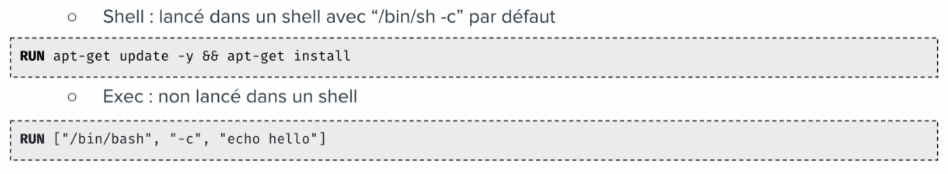
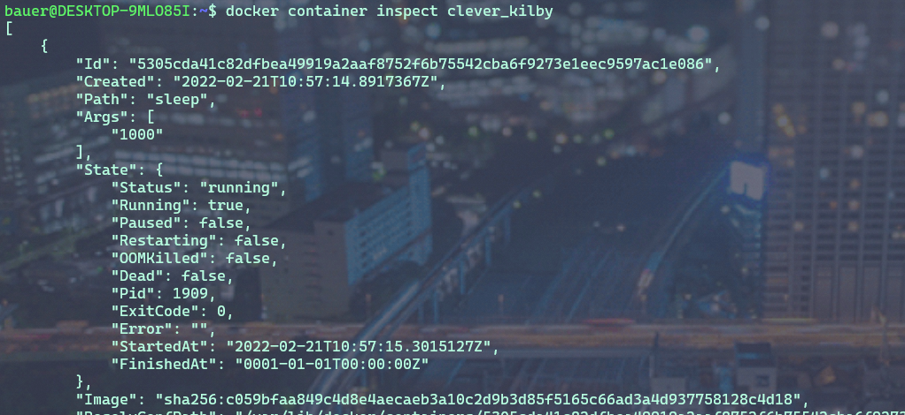
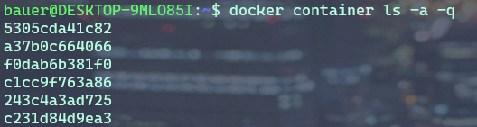
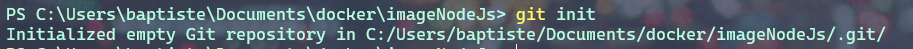
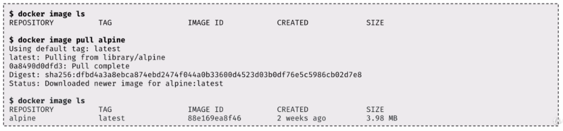
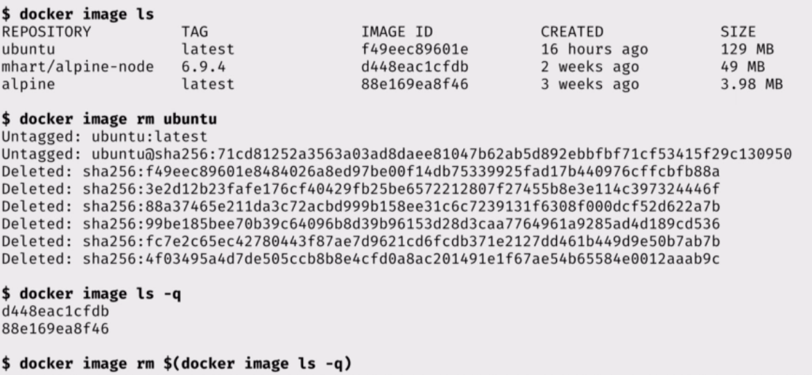

3.0 Les containers avec Docker¶
Après avoir présenté la plateforme Docker, nous allons voir comment créer des containers en ligne de commande pour lancer des services en tâche de fond et/ou pour rendre disponible dans un container des repertoires de la machine hôte.
Nous verrons comment lancer un container dans un mode d’accès privilégié, ainsi que les commandes de bases pour la gestion du cycle de vie des containers.
Avant la 1.13, lancer un container s’effectuait avec la commande : Docker Run sans le mot clé container.
Il est toujours possible de le faire.
Mais maintenant les commandes ont été regroupé aux composant auquel elles se rapportent. C’est la raison pour laquelle le mot clé container a été rajouté pour les commandes relatifs à la gestion des containers.
docker container run [OPTIONS] IMAGE [COMMAND] [ARG]
D’autres groupes de commande existent et nous les étudierons plus tard.
3.1 Hello World¶
Lançons notre premier container Hello-World.

Ouvrez un terminal et tapez :
docker container run hello-world

Le client demande au daemon (processus) de lancer un container basé sur l’image Hello-World . Cette image ,n’étant pas disponible en local, est téléchargée et le processus présent dans cette image est automatiquement exécuté.
Et dans le cas de notre Hello-world, il s’agit seulement d’écrire du texte sur la sortie standard : Hello from Docker suivi d’un texte.
Cet exemple est simple mais il met en avant le mécanisme sous-jacent. A la fin du texte on nous demande d’essayer un exemple plus ambitieux, c’est ce que nous allons faire par la suite.
Expérimentez la commande : docker container run hello-world sur votre machine
3.2 Ubuntu sous docker¶
Nous pouvons lancer un autre container basé sur l’image de Ubuntu et lui demander d’afficher Hello dans le contexte de cette image.
docker container run ubuntu echo hello

Analyser le contenu des cadres ci-dessus. A quelles actions correspondent-ils ?
3.2 Un container dans un mode Interactif¶
Le mode interactif permet d’avoir accès à un shell depuis le client local qui tourne dans le contexte du container.
Pour cela il faut rajouter deux options à notre commande :
-t qui permet d’allouer un pseudo terminal à notre container.
-i qui va permettre de laisser l’entrée standard du container ouverte.
Nous allons utiliser l’image Ubuntu qui contient les binaires et les bibliothèques du système d’exploitation Ubuntu. Le processus du container s’exécutera donc dans cette environnement, c’est-à-dire dans le système de fichier qui est amené par le système Ubuntu.
docker container run -t -i ubuntu bash
ou
docker container run -ti ubuntu bash

Nous voyons que nous avons accès à un shell ( coquille en anglais, interface système).
Nous reconnaissons sans peine le prompt Ubuntu/Linux dans lequel nous pouvons écrire par exemple une commande Linux : ls
Tapez dans le shell, la commande : cat /etc/issue.
Quelle information obtenez-vous ?
Pour sortir du container on va tuer le processus avec la commande : exit
Nous aurions pu faire la même chose en utilisant une autre image que celle d’Ubuntu. Par exemple : Nous souhaitons lancer un container basé sur la distribution Linux Alpine. C’est une distribution légère et sécurisée.
docker container run -t -i alpine
ou
docker container run -ti alpine

Vous savez maintenant lancer un shell interactif dans un container.
Quand on lance un container avec seulement la commande docker container run
par défaut le container est exécuté en foreground, mais si l’on veut l’exécuter en background, c’est-à-dire en tâche de fond, il faudra utiliser l’option -d et la commande retournera alors l’ identifiant du conteneur que l’on pourra utiliser par la suite pour effectuer différentes actions.
Par exemple nous pouvons lancer un container basé sur l’image nginx, un serveur http.
Container NGINX en foreground¶
Création du conteneur en foreground, cela signifie que l’on ne récupère pas la main
docker container run nginx

Le conteneur est lancé et occupe notre console. Nous n’avons pas la main.
Container NGINX en background¶
docker container run -d nginx

Nous voyons ici que nous avons NGINX qui tourne en tâche de fond et nous pouvons accéder à ce container par la suite grâce à son identifiant.
Nous pourrions aussi accéder à ce serveur web depuis un navigateur. Cela n’est actuellement pas possible car nous n’avons pas publié de port.
3.3 Publication de port.¶
La publication d’un port est utilisée pour qu’un container puisse être accessible depuis l’extérieur.
Afin de publier un port nous utilisons l’option -p HOST_PORT:CONTAINER_PORT.
Cela permet de publier un port du conteneur sur un port de la machine hôte.
L’option -P quant à elle laisse le choix du port au docker démon.
Reprenons notre container NGINX qui est un serveur http. Par défaut, NGINX est un processus qui se lance sur le port 80 dans le container. Si nous souhaitons accéder à notre container depuis un navigateur de la machine hôte sur le port 8080 de la machine hôte, nous lançerons le container nginx avec la commande suivante :
docker container run -d -p 8080:80 nginx
Maintenant, nous pouvons ouvrir notre navigateur sur l’adresse : http://localhost:8080

3.4 Bind-mount¶
Nous allons maintenant voir comment monter un répertoire de la machine hôte dans un container.
Cela s’effectue grâce à l’option -v <HOST_PATH>:<CONTAINER_PATH>
Il existe une autre notation avec l’option --mount type=bind, src=<HOST_PATH>,dst=<CONTAINER_PATH>
Cela permet de partager,par exemple,le code source d’un programme présent sur une machine hôte avec des containers
ou de monter la socket Unix du daemon Docker (/var/run/docker.sock) pour permettre à un container de dialoguer avec le daemon.
3.4.1 Exemple 1 : monter un dossier ‘www’¶
Quand vous développez une application et que vous modifiez le code source, il peut être intéressant que cela soit pris en compte dans le conteneur.
C’est le cas lors du développement d’une application web.
Nos fichiers sources sont sur une machine locale, et dans un conteneur nous avons un serveur WEB avec NGINX par exemple.
Nous allons alors monter le dossier www local dans le container.
docker container run -v $PWD/www:/usr/share/nginx/html -d -p 80:80 nginx
Ou
docker container run –mount type=bind,src=$PWD/www,dst=/usr/share/nginx/html -d -p 80:80 nginx
$PWD est une variable d’environnement qui va être créé par le SHELL et prendra comme valeur le chemin du répertoire courant dans lequel la commande a été lancé.

3.4.2 Exemple 2 : Intéragir avec le Docker Daemom¶
Dans cet exemple nous allons voir comment lier(bind) /var/run/docker.sock.
Ce qui nous permettra d’interagir avec le Docker Daemon directement depuis le container et cela nous donnera accès à l’ API du Daemon.

Pour LINUX UNIQUEMENT¶
Créons donc un simple container : avec l’image d’ Alpine.
docker container run --rm -it --name admin -v /var/run/docker.sock:/var/run/docker.sock alpine
Maintenant que le container est monté, et branché au Docker Daemon, nous pouvons lui envoyer des requêtes.
Depuis le Shell: Installons CURL :
apk add curl pour ajouter l’utilitaire CURL.
Nous allons lancer une requête http POST sur le Docker DAEMON :
curl -X POST –unix-socket /var/run/docker.sock -d '{"Image":"nginx:1.12.2"}' -H 'Content-Type: application/json' http://localhost/containers/create
Cela aura pour effet de demander au Docker Daemon de créer un nouveau container avec l’image NGINX version 1.12.2.
Le paramètre -X POST permet d’effectuer quel type de requête http ?
Sous quel format sont envoyés les instructions de configuration de l’image Docker à créer ?
Pour lancer le container depuis le container ADMIN :
curl -XPOST –unix-socket /var/run/docker.sock http://localhost/containers/6b24...283b/start
Dans cette commande, à votre avis à quoi corresponde la chaine de caractère : 6b24...283b ?
Pour WINDOWS UNIQUEMENT¶
Bientôt disponible ….
3.4.3 Exemple 3 : Ecouter les actions demandées au Docker Daemon¶
Nous allons lancer un autre dans laquel le socket est monté. Et nous allons écouter les actions demandées sur le Docker Daemon. Même ceux provenant d’autres containers.
docker container run –name admin -ti -v /var/run/docker.sock:/var/run/docker.sock alpine
curl –unix-socket /var/run/docker.sock http://localhost/events
3.5 Limitation des ressources¶
Nous avons dit que le lancement d’un containeur revient en fait à exécuter un processeur , et par défaut, il n’y a pas de limite de consommation des ressources matériels. Par exemple, Un container pourra utiliser toute la RAM et impacter tout les autres containeurs qui tournent sur la même machine hôte.
Nous pouvons toutefois imposer des limites à un containeur.
Lançons un containeur avec l’image estesp/hogit qui a pour objectif de consommer de la ram.
docker container run --memory 32m estesp/hogit
Avec --memory 32m, nous avons fixé une limite : quand le processus aura atteint la limite de 32M de RAM consomméecho, il sera tué par Docker.
Nous pouvons limiter l’utilisation du CPU également.
Lançons un containeur avec l’image progrium/stress qui va se charger de stresser les cœurs du CPU.
docker container run -it –rm progrium/stress -–cpu 4
Ici les 4 cœurs du CPU serons utilisés car nous n’avons pas imposé de limite.
Maintenant lançons la même commande avec le flag --cpus 0.5 pour limiter l’utilisation du CPU à la moitié d’un cœur. (12% d’utilisation)
docker container run -it --rm progrium/stress -–cpu 4 –-cpus 0.5
En utilisant la valeur du flag : --cpus 2 , nous limitons l’utilisation à 2 cœurs seulement. (50% d’utilisation)
3.6 Les droits dans un container¶
Dans un containeur, s’il n’est pas précisé explicitement, l’utilisateur root sera utilisé comme propriétaire.
L’utilisateur root du containeur correspond à l’utilisateur root de la machine hôte.
Une bonne pratique est d’utiliser un autre utilisateur pour lancer le containeur.
Il y a plusieurs façons de le définir : soit à la création de l’image, soit en utilisant l’option –user, soit en changeant l’utilisateur dans le processus du container (gosu).
Lançons un container basé sur l’image Alpine et exécutons l’instruction sleep 10000.
docker container run -d alpine sleep 10000
Nous allons vérifier le owner du processus depuis la machine hôte :
Pour LINUX :
ps aux | grep sleep
pour WINDOWS :
Sous Windows, nous n’avons pas accès aux commandes LINUX nativement.
Il faut utiliser les commandes Docker natives pour avoir accès aux informations liées aux processus des containeurs par l’intermédiaire de leur identifiant ou nom et
via la commande top.
Récupérez l’identifiant ou le nom du container obtenue avec la commande précédente puis :
docker container top <identifiant ou nom du container>
Faisons la même manipulation, mais cette fois avec l’image officielle de MongoDB
docker container run -d mongo

On constate que le processus est la propriété d’un owner qui posséde un UID de 999.
Nous verrons par la suite comme il est possible de configurer le owner d’un processus lors du montage de container.
3.6 Des options utiles¶
Note
--namequi permet de donner un nom au container.--rmpour supprimer le container quand il est stoppé.--restart=on-failurepour relancer le container en cas d’erreur.
3.7 Les commandes de base avec Docker¶
docker container <command>
Commande |
Description |
|---|---|
run |
Création d’un container |
ls |
Liste des containers |
inspect |
Détails d’un container |
logs |
Visualisation des logs |
exec |
Lancement d’un processus dans un container existant |
stop |
Arrêt d’un container |
rm |
Suppression d’un container |
La commande
ls:
La commande docker container ls montre les containers qui sont en cours d’execution.

Pour lister tout les containers actifs et stoppés : docker container ls -a.

Pour lister les identifiants des containers actifs et stoppés : docker container ls -a -q.

A partir d’un nom ou identifiant d’un container on peut l’inspecter :

La commande renvoie une multitude d’information de configuration du container. On peut utiliser des templates (Go Template) pour formater les données reçues et même extraire seulement des informations nécessaires : par exemple : Obtenir l’IP
docker container inspect --format '{{ .NetworkSettings.IPAddress }}' clever_kilby
La commande
logs:
Cette commande,nous permets de visualiser les logs d’un container , l’option -f permet de les lire en temps réel.
Créons un container sous une image alpine qui exécutera une commande ping 8.8.8.8 et qui sera nommé : ping
docker container run --name ping -d alpine ping 8.8.8.8
Puis, écoutons en temps réel les logs du container nommé ping
docker container logs -f ping
La commande
exec:
Cette commande permet de lancer un processus dans un container existant pour faire du débug par exemple.
Dans ce cas nous utiliserons les options -t et -i pour obtenir un shell intéractif.
Exemple : lançons un container qui attend 100000 secondes, et demandons ensuite d’ouvrir un shell pour lister les processus de ce container.
docker container run -d --name debug alpine sleep 100000
On lance le container avec l’option -d pour le mettre en tâche de fond et récupérer la main sur le terminal et on lui donne le nom debug pour le manipuler facilement.
Ensuite nous utilisons la commande exec qui injectera dans notre container une commande, à savoir ici, la demande d’ouverture d’un shell.
docker container exec -ti debug sh

Sur la capture d’écran :
Dans le shell, nous avons exécuté la commande ps aux. Qui permet de lister les processus et leur owner.
On constact que le processus de PID 1 , correspond à la commande sleep.
Et le processus de PID 15 correspond à notre ps aux.
Warning
Si l’on kill le processus de PID 1, le container s’arrêtera, car un container n’est actif que tant que son processus de PID 1 spécifié au lancement est en cours d’exécution.
La commande
stop:
Cette commande permet de stopper un ou plusieurs containers.
docker container stop <ID>
docker container stop <NAME>
Nous pouvons combiner des commandes !
Rappel : Obtenir la liste des containers en cours d’exécution :
docker container ls -q
Donc pour stopper les containers en cours d’exécution :
docker container stop $(docker container ls -q)
Les containers stoppés existent toujours :
docker container ls -a
La commande
rm:
Pour supprimer un container.
docker container rm <ID>
docker container rm <NAME>
Donc, par combinaison de commande, nous pouvons supprimer définitivement un ou plusieurs containers qui sont déjà stoppé.
docker container rm $(docker container ls -aq)
Avec l’option -f nous pouvons forcer l’arrêt d’un container et le supprimer dans la foulée.
3.8 En pratique :¶
Lançons quelques containers pour pratiquer, vous devez être en mesure de comprendre maintenant la finalité de ces 3 commandes :
docker container run -d -p 80:80 --name www nginx
docker container run -d --name ping alpine ping 8.8.8.8
docker container run hello-world
Listons les containers :

Nous voyons les 2 premiers containers avec le statut UP.
Nous ne voyons pas le 3 ieme container pour la simple raison qu’une fois qu’il a effectué son action : echo hello world , il s’est arrêté automatiquement.
Par contre avec un :
docker container ls -a celui-ci est visible.
Son statut est exited, indiquant qu’il n’est pas démarré.
Nous pouvons inspecter les containers et en particulier extraire une information comme l’adresse IP de notre serveur web NGINX :
docker container inspect --format '{{ .NetworkSettings.IPAddress }}' www

Nous pouvons lancer une commande dans un container en cours : par exemple nous voulons lister la liste des processus en cours dans le container ping :
docker container exec -ti ping sh
Un shell est alors disponible, et dedans nous pouvons taper la commande : ps aux

Tapez : exit pour sortir du shell.
Stoppons les containers : ping et www
docker container stop ping www
faites ensuite : docker container ls
Que constatez vous ? Pourquoi ?
Même question avec : docker container ls -a
Supprimons maintenant les containers créés :
docker container rm $(docker container ls -a -q)
3.9 Exercices :¶
3.9.1 Exercice 1 : Hello From Alpine¶
Le but de ce premier exercice est de lancer des containers basés sur l’image alpine.
Lancez un container basé sur alpine en lui fournissant la command echo hello
Quelles sont les étapes effectuées par le docker daemon ?
Lancez un container basé sur alpine sans lui spécifier de commande. Qu’observez-vous ?
3.9.2 Exercice 2 : Shell intéractif¶
Le but de cet exercice est lancer des containers en mode intéractif.
Lancez un container basé sur alpine en mode interactif sans lui spécifier de commande
Que s’est-il passé ?
Quelle est la commande par défaut d’un container basé sur alpine ?
Naviguez dans le système de fichiers
Utilisez le gestionnaire de package d’alpine (
apk) pour ajouter un package :apk updateetapk add curl.
3.9.3 Exercice 3 : foreground / background¶
Le but de cet exercice est de créer des containers en foreground et en background.
Lancez un container basé sur alpine en lui spécifiant la commande
ping 8.8.8.8.Arrêter le container avec
CTRL-C
Le container est t-il toujours en cours d’exécution ?
Note
Vous pouvez utiliser la commande docker ps que nous détaillerons prochainement, et qui permet de lister les containers qui tournent sur la machine.
Lancez un container en mode interactif en lui spécifiant la commande
ping 8.8.8.8.Arrêter le container avec
CTRL-P CTRL-Q
Le container est t-il toujours en cours d’exécution ?
Lancez un container en background, toujours en lui spécifiant la commande
ping 8.8.8.8.
Le container est t-il toujours en cours d’exécution ?
3.9.4 Exercice 4 : Publication de port¶
Le but de cet exercice est de créer un container en exposant un port sur la machine hôte.
Lancez un container basé sur
nginxet publiez leport 80du container sur leport 8080de l’hôte.Vérifiez depuis votre navigateur que la page par défaut de
nginxest servie surhttp://localhost:8080.Lancez un second container en publiant le même port.
Qu’observez-vous ?
3.9.5 Exercice 5 : Liste des containers¶
Le but de cet exercice est de montrer les différentes options pour lister les containers du système.
Listez les containers en cours d’exécution.
Est ce que tous les containers que vous avez créés sont listés ?
Utilisez l’option
-apour voir également les containers qui ont été stoppés.Utilisez l’option
-qpour ne lister que les IDs des containers (en cours d’exécution ou stoppés).
3.9.6 Exercice 6 : Inspection d’un container¶
Le but de cet exercice est l’inspection d’un container.
Lancez, en background, un nouveau container basé sur nginx en publiant le port 80 du container sur le port 3000 de la machine host.
Notez l’identifiant du container retourné par la commande précédente.
Inspectez le container en utilisant son identifiant.
En utilisant le format Go template, récupérez le nom et l’IP du container.
Manipuler les Go template pour récupérer d’autres information.
3.9.7 Exercice 7 : exec dans un container¶
Le but de cet exercice est de montrer comment lancer un processus dans un container existant.
Lancez un container en background, basé sur l’image alpine. Spécifiez la commande
ping 8.8.8.8et le nom ping avec l’option--name.Observez les logs du container en utilisant l’ID retourné par la commande précédente ou bien le nom du container.
Quittez la commande de logs avec CTRL-C.
Lancez un shell
sh, en mode interactif, dans le container précédent.Listez les processus du container.
Qu’observez vous par rapport aux identifiants des processus ?
3.9.8 Exercice 8 : cleanup¶
Le but de cet exercice est de stopper et de supprimer les containers existants.
Listez tous les containers (actifs et inactifs)
Stoppez tous les containers encore actifs en fournissant la liste des IDs à la commande
stop.Vérifiez qu’il n’y a plus de containers actifs.
Listez les containers arrêtés.
Supprimez tous les containers.
Vérifiez qu’il n’y a plus de containers.
3.10 En résumé¶
Nous avons commencé à jouer avec les containers et vu les commandes les plus utilisées pour la gestion du cycle de vie des containers
(run, exec, ls, rm, inspect). Nous les utiliserons souvent dans la suite du cours.
C’est parfois utile d’avoir un Shell directement sur la machine hôte.
C’est-à-dire la machine sur laquelle le Docker Daemon tourne.
Si l’on est sur linux, le client et le daemon tournent sur la même machine.
Par contre le docker daemon va tourner sur une machine virtuelle sous Windows alors que le client sera lui sur une machine locale.
4.0 Les images Docker¶
Nous allons parler des images Docker. Une image est un système de fichier qui contient une application et l’ensemble des éléments nécessaires pour la faire tourner. On peut voir une image comme étant un template permettant la création d’un container. L’image est portable sur n’importe quel environnement où tourne Docker et est composée de couches (layers) qui peuvent être réutilisé par d’autres images. On distribue une image via un registry ( ex : Docker Hub)
Contenu d’une image :

La construction du fichier image, se fait dans l’ordre inverse du contenu d’une image que l’on vient de lister.
On part d’un OS de base qui va ajouter une ou plusieurs couches comme le système de fichiers. A cet OS on va ajouter une ou plusieurs couches liées à l’environnement de notre application puis de la même façon les dépendances et le code applicatifs.
Et l’ensemble de ses couches forment l’image.

4.1 Union Filesystem¶
Une image est donc constituée d’un ensemble de layers ou couches et chacune d’elles est en lectures seules. Et c’est le rôle du storage/graph driver de constituer le système de fichier global de l’instance du container.
Le Graph driver ajoute en plus une couche qui est en lecture/écriture pour permettre au processus de modifier le filesystem sans que les modifications ne soient persistées dans les layers de l’image.
Il existe plusieurs filesystem et le choix du système dépend principalement du filesystem hôte.
Par default, toutes les layers sont installées dans le répertoire /var/lib/docker sur la machine hôte et c’est à cette endroit que sont stockées toutes les layers des images.
Warning
Sur windows 10, docker s’exécute sur une VM. Ressources à consulter pour comprendre comment Docker fonction sous Windows :
Pour accèder à ce dossier sous Windows, il faut alors créer un container et le lier avec Docker :
docker run -it --privileged --pid=host debian nsenter -t 1 -m -u -i sh
Nous pouvons alors lister le dossier /var/lib/docker dans le shell.
ls /var/lib/docker
Il est possible de modifier des fichiers qui sont apportés par une layer ; cela s’appelle : copy-On-Write. Le fichier original est alors copier dans la layer qui est en lecture / écriture et la modification peut être persistée.

4.2 Exercices¶
4.2.1 Exercice 1 : Container’s layer¶
La layer d’un container, est la layer read-write créé lorsqu’un container est lancé. C’est la layer dans laquelle tous les changements effectués dans le container sont sauvegardés. Cette layer est supprimée avec le container et ne doit donc pas être utilisée comme un stockage persistant.
Lancement d’un container
Utilisez la commande suivante pour lancer un shell intéractif dans un container basé sur l’image ubuntu.
docker container run -ti ubuntu
Installation d’un package
figlet est un package qui prend un texte en entrée et le formatte de façon amusante. Par défaut ce package n’est pas disponible dans l’image ubuntu.
Vérifiez le avec la commande suivante:
figlet
La commande devrait donner le résultat suivant :
bash: figlet: command not found
Installez le package figlet avec les commandes suivantes:
apt-get update -y
apt-get install figlet
Vérifiez que le binaire fonctionne :
figlet Hola
Ce qui devrait donner le résultat suivant
| | | | ___ | | __ _
| |_| |/ _ \| |/ _` |
| _ | (_) | | (_| |
|_| |_|\___/|_|\__,_|
Sortez du container.
exit
Lancement d’un nouveau container
Lancez un nouveau container basé sur ubuntu.
docker container run -ti ubuntu
Vérifiez si le package figlet est présent :
figlet
Vous devriez obtenir l’erreur suivante:
bash: figlet: command not found
Comment expliquez-vous ce résultat ? Chaque container lancé à partir de l’image ubuntu est différent des autres. Le second container est différent de celui dans lequel figlet a été installé. Chacun correspond à une instance de l’image ubuntu et a sa propre layer, ajoutée au dessus des layers de l’image, et dans laquelle tous les changements effectués dans le container sont sauvegardés.
Sortez du container.
exit
Redémarrage du container
Listez les containers (en exécution ou non) sur la machine hôte.
docker container ls -a
Depuis cette liste, récuperez l’ID du container dans lequel le package figlet a été installé et redémarrez le avec la commande suivante.
Note: la commande start permet de démarrer un container se trouvant dans l’état Exited.
docker container start <CONTAINER_ID>
Lancez un shell intéractif dans ce container en utilisant la commande exec.
docker container exec -ti <CONTAINER_ID> bash
Vérifez que figlet est présent dans ce container.
figlet Hola
Résultat :
| | | | ___ | | __ _
| |_| |/ _ \| |/ _` |
| _ | (_) | | (_| |
|_| |_|\___/|_|\__,_|
Vous pouvez maintenant sortir du container.
exit
Nettoyage
Listez les containers (en exécution ou non) sur la machine hôte
docker container ls -a
Pour supprimer tous les containers, nous pouvons utiliser les commandes rm et ls -aq conjointement. Nous ajoutons l’option -f afin de forcer la suppression des containers encore en exécution. Il faudrait sinon arrêter les containers et les supprimer.
docker container rm -f $(docker container ls -aq)
Tous les containers ont été supprimés, vérifiez le une nouvelle fois avec la commande suivante:
docker container ls -a
4.3 DockerFile¶
Le DockerFile est un fichier texte qui est utilisé pour la construction d’une image DOCKER. Il contient des instructions pour la construction du système de fichier d’une image. Nous allons partir d’un fichier de base qui sera enrichie par notre application et l’ensemble de ses dépendances.
Exemple d’un Docker File dans laquelle est packagée une application NODEJS.

Avec l’instruction FROM nous définissons une image de base dans laquelle l’application NODEJS sera packagée.
COPY qui permet d’ajouter la liste des dépendances.
RUN permet de définir la commande d’installation des dépendances.
EXPOSE défini le port utilisé par l’application.
WORKDIR nous positionnes dans le répertoire de travail.
CMD défini la commande à lancer lorsqu’un container sera lancer à partir de cette image.
Voici la liste des principales instructions à utiliser dans un DockerFile.

L’instruction FROM.
Il s’agit de la première instruction dans un DOckerFile. Elle permet de spécifier l’image à partir de laquelle nous allons créer une nouvelle image. On peut partir d’une image d’un OS, ou d’une image contenant déjà des applications comme un serveur web, ou un environnement d’exécution enveloppé dans une image contenant un OS de base.
Nous pouvons utiliser également une image particulière qui s’appelle SCRATCH, c’est une image au sens DOCKER même si elle est vide, et peut etre utilisé par example dans une application écrite en langage GO qui n’a pas besoin d’être packagé dans un système de fichier.
L’instruction ENV.
Cette instruction nous permet de définir des variables d’environnement. Et pourront être utilisée dans les instructions suivantes lors de la construction de l’image. On les retrouvera dans l’environnement des containers lancés à partir de cette image.

Dans cet exemple, nous construisons une image basée sur NGINX et on défini une variable path que l’on pourra utiliser dans les instructions suivantes : WORKDIR et COPY.
L’instruction COPY / ADD.
Permet de copier des ressources locales vers le système de fichier de l’image que l’on créé.
Et cela engendre la création d’une nouvelle layer pour l’image.
Avec l’option –chown on peut définir les droits sur ces fichiers qu’auront les utilisateurs de l’image.
ADD permet des actions supplémentaires comme récupérer des ressources à partir d’une URL. Ou de Dézipper des fichiers.
Il est préférable d’utiliser COPY par rapport à ADD car l’on maitrise davantage comment la copie est faite.
L’instruction RUN.
RUN est une instruction qui va engendrer la construction d’une nouvelle layer pour l’image.
Elle permet d’exécuter une commande dans le système de fichier de l’image comme l’installation d’un package. Il y a 2 formats pour définir la commande. Le format SHELL qui va lancer la commande dans le contexte d’un shell. Et le format Exec qui va définir la commande comme une liste de string et qui n’est pas lancée dans le contexte d’un shell.
L’instruction EXPOSE.
Permet de spécifier les ports sur lesquels l’application écoute au lancement du container. Mais cela peut être modifié par l’option : -p lors de la création du container.
Nous pouvons utiliser aussi un mapping comme vu précédemment : -p HOST_PORT:CONTAINER_PORT.
On peut aussi utiliser l’option P dans ce cas le démon DOCKER va publier l’ensemble des ports en attribuant à chacun un port de la machine hôte.

L’instruction VOLUME.
Permet de définir un répertoire dont les données sont découplées du cycle de vie du container. Les fichiers ne seront pas stockés dans la layer lecture/écriture du container mais dans le système de fichier de la machine hôte. Et si le container est supprimé, les données de ce répertoire seront toujours là.
Si on reprend l’exemple du dockerfile de MongoDB.

L’instruction VOLUME est utilisée pour créer 2 volumes. Au lancement de cette image, deux répertoires seront créés sur la machine hôte.
L’instruction USER.
Si on ne définit pas l’utilisateur, par défaut se sera ROOT qui sera utilisé. Ce qui pose des problèmes de sécurité évident.
L’instruction HEALTHCHECK.
Vérifie l’état de santé du processus qui tourne dans un container. On peut définir des options comme la fréquence d’inspection.

L’instruction ENTRYPOINT / CMD.
Spécifie la commande qui sera exécuté lorsque l’on lancera un container basé sur cette image. Les instruction CMD et ENTRYPOINT sont les dernières instructions du fichier DOCKERFILE.
On précise souvent le binaire de l’application dans ENTRYPOINT et les paramètres dans CMD.
La commande alors exécuté correspondra à la concaténation de ENTRYPOINT et CMD.
On peut modifier ses paramètres au lancement du container si besoin avec l’annotation Shell ou Exec vu précédemment.

4.3 Création d’images¶
Il est temps maintenant de créer notre image. Dans un premier temps il faut : créer un fichier DockerFile qui contiendra les instructions nécessaires. Ensuite il faut utiliser la commande :
docker image builde [OPTIONS] PATH | URL | -
Des options courantes :
-f: spécifie le fichier à utiliser pour la construction (DockerFile par défaut)--tag / -t: spécifie le nom de l’image ([registry/]user/repository :tag)--label: ajout de métadonnées à l’image.
4.4 Mise en pratique¶
Nous allons créer une simple application NODEJS qui renverra la date et l’heure. Tout l’environnement nécessaire à l’exécution de ce script sera intégré dans une image que nous allons créer.
Dans un dossier, créez le fichier index.js:
var express = require('express');
var util = require('util');
var app = express();
app.get('/', function(req, res) {
res.setHeader('Content-Type', 'text/plain');
res.end(util.format('%s - %s\n', new Date(), 'Got Request'));
});
app.listen(process.env.PORT || 8080);
Puis créez le fichier package.js dans le même dossier :
{
"name": "testnode",
"version": "0.0.1",
"main": "index.js",
"scripts": {
"start": "node index.js"
},
"dependencies": {
"express": "^4.14.0"
}
}
Dans une console, placez vous dans le dossier dans lequel vous avez déposé les fichiers et tapez :
npm install
puis
npm start
Ouvrez un navigateur à l’adresse : http://localhost:8080
Si tout se passe comme prévu alors vous dévriez avoir ceci :

Notre application fonctionne, mais cela est lourd pour l’utilisateur :
Il doit avoir NODEJS d’installé sur sa machine.
Il doit installer les dépendances du projet, ici
express.Il doit lancer le serveur Nodejs.
Il faudrait donc créer une image réalisant ces étapes !!
Nous allons créer un DockerFile.
Il nous faut trouver une image de base sur : Docker Hub
Cochez : « Official Images » pour n’avoir que des images officielles. Nous voyons que nous avons une multitude de possibilité pour concevoir notre image.

Nous pouvons partir sur une image LINUX : UBUNTU, ALPINE …Etc mais aussi une image où le runtime NODEJS est déjà packagé. C’est ce que nous allons choisir.

En cliquant dessus, sélectionnez l’onglet TAGS.

Et dans la liste, nous allons nous intéresser à une version de NODEJS sous Alpine3.15.

Et conservons en mémoire le tag de cette version de node : current-alpine3.15
Maintenant dans le dossier contenant notre application, créons un fichier : Dockerfile. Sans extension.
Fichier : Dockerfile
# Nous renseignons dans l'instruction FROM le Tag de notre image qui servira de base à notre application
FROM node:current-alpine3.15
# Nous allons copier nos fichiers sources du répertoire courant du fichier Dockerfile dans le repertoire /app/.
# C'est un répertoire qui sera créé dans l'image lorsque l'on va faire le build
COPY . /app/
RUN cd /app && npm install
EXPOSE 8080
WORKDIR /app
CMD ["npm", "start"]
A partir de ce Dockerfile, nous allons pouvoir créer une image.
docker image build -t appbts:0.1 .
Nous voyons que pour chaque instruction nous avons une étape.
Si nous allons dans Docker Desktop , onglet « Images » :

Nous voyons notre image, avec son nom et son numéro de version.
Nous pouvons maintenant créer un containeur avec notre application,
en précisant que nous utiliserons le port 8080 du container sur le port 8080 de ma machine hôte.
docker container run -p 8080:8080 appbts:0.1
Et je peux maintenant utiliser mon navigateur à l’adresse : http://localhost:8080
4.5 Exercices : Création d’images¶
4.5.1 Exercice 1 : Création d’une image à partir d’un container¶
Lancez une container basé sur une image alpine, en mode interactif, et en lui donnant le nom
c1.Lancez la commande
curl google.com.
Qu’observez-vous ?
Installez
curlà l’aide du gestionnaire de packageapk.Quittez le container avec
CTRL-P CTRL-Q(pour ne pas killer le processus de PID 1).Créez une image, nommée
curly, à partir du containerc1.
Utilisez pour cela la commande commit (docker commit --help pour voir le fonctionnment de cette commande).
Lancez un
shellintéractif dans un container basée sur l’imagecurlyet vérifiez quecurlest présent.
4.5.2 Exercice 2 : Dockerizez un serveur web simple¶
Créer un nouveau répertoire et développez un serveur HTTP qui expose le endpoint
/pingsur le port 80 et répond par PONG. Inspirez vous de l’exemple du cours ci-dessus.Dans le même répertoire, créez le fichier Dockerfile qui servira à construire l’image de l’application. Ce fichier devra décrire les actions suivantes :
spécification d’une image de base.
installation du runtime correspondant au langage choisi.
installation des dépendances de l’application.
copie du code applicatif.
exposition du port d’écoute de l’application.
spécification de la commande à exécuter pour lancer le serveur.
Construire l’image en la taguant
pong:v1.0.Lancez un container basé sur cette image en publiant le
port 80sur leport 8080de la machine hôte.Tester l’application.
Supprimez le container.
4.5.3 Exercice 3 : ENTRYPOINT et CMD¶
Nous allons illustrer sur plusieurs exemples l’utilisation des instructions ENTRYPOINT et CMD. Ces instructions sont utilisées dans un Dockerfile pour définir la commande qui sera lancée dans un container.
Format¶
Dans un Dockerfile, les instructions ENTRYPOINT et CMD peuvent être spécifiées selon 2 formats:
le format
shell, ex:ENTRYPOINT /usr/bin/node index.js. Une commande spécifée dans ce format sera exécutée via un shell présent dans l’image. Cela peut notamment poser des problématiques car les signaux ne sont pas forwardés aux processus forkés.le format
exec, ex:CMD ["node", "index.js"]. Une commande spécifiée dans ce format ne nécessitera pas la présence d’un shell dans l’image. On utilisera souvent le format exec pour ne pas avoir de problème si aucun shell n’est présent.
Ré-écriture à l’exécution d’un container¶
ENTRYPOINT et CMD sont 2 instructions du Dockerfile, mais elle peuvent cependant être écrasées au lancement d’un container:
pour spécifier une autre valeur pour l’ENTRYPOINT, on utilisera l’option
--entrypoint, par exemple:docker container run --entrypoint echo alpine hello.pour spécifier une autre valeur pour CMD, on précisera celle-ci après le nom de l’image, par exemple:
docker container run alpine echo hello.
Instruction ENTRYPOINT utilisée seule¶
L’utilisation de l’instruction ENTRYPOINT seule permet de créer un wrapper autour de l’application. Nous pouvons définir une commande de base et lui donner des paramètres suplémentaires, si nécessaire, au lancement d’un container.
Dans ce premier exemple, vous allez créer un fichier Dockerfile-v1 contenant les instructions suivantes:
Créez ensuite une image, nommée ping:1.0, à partir de ce fichier.
docker image build -f Dockerfile-v1 -t ping:1.0 .
Lancez maintenant un container basé sur l’image ping:1.0
docker container run ping:1.0
La commande ping est lancée dans le container (car elle est spécifiée dans ENTRYPOINT), ce qui produit le message suivant:
BusyBox v1.26.2 (2017-05-23 16:46:25 GMT) multi-call binary.
Usage: ping [OPTIONS] HOST
Send ICMP ECHO_REQUEST packets to network hosts
-4,-6 Force IP or IPv6 name resolution
-c CNT Send only CNT pings
-s SIZE Send SIZE data bytes in packets (default:56)
-t TTL Set TTL
-I IFACE/IP Use interface or IP address as source
-W SEC Seconds to wait for the first response (default:10)
(after all -c CNT packets are sent)
-w SEC Seconds until ping exits (default:infinite)
(can exit earlier with -c CNT)
-q Quiet, only display output at start
and when finished
-p Pattern to use for payload
Par défaut, aucune machine hôte n’est ciblée, et à chaque lancement d’un container il est nécessaire de préciser un FQDN ou une IP.
La commande suivante lance un nouveau container en lui donnant l’adresse IP d’un DNS Google (8.8.8.8),
nous ajoutons également l’option -c 3 pour limiter le nombre de ping envoyés.
docker container run ping:1.0 -c 3 8.8.8.8
Nous obtenons alors le résultat suivant :
PING 8.8.8.8 (8.8.8.8): 56 data bytes
64 bytes from 8.8.8.8: seq=0 ttl=37 time=8.731 ms
64 bytes from 8.8.8.8: seq=1 ttl=37 time=8.503 ms
64 bytes from 8.8.8.8: seq=2 ttl=37 time=8.507 ms
--- 8.8.8.8 ping statistics ---
3 packets transmitted, 3 packets received, 0%
round-trip min/avg/max = 8.503/8.580/8.731 ms
La commande lancée dans le container est donc la concaténation de l’ENTRYPOINT et de la commande spécifiée lors du lancement du container (tout ce qui est situé après le nom de l’image).
Comme nous pouvons le voir dans cet exemple, l’image que nous avons créée est un wrapper autour de l’utilitaire ping et nécessite de spécifier des paramêtres supplémentaires au lancement d’un container.
Instructions CMD utilisée seule¶
De la même manière, il est possible de n’utiliser que l’instruction CMD dans un Dockerfile, c’est d’ailleurs très souvent l’approche qui est utilisée car il est plus simple de manipuler les instructions CMD que les ENTRYPOINT. Créez un fichier Dockerfile-v2 contenant les instructions suivantes:
Créez une image, nommée ping:2.0 , à partir de ce fichier.
docker image build -f Dockerfile-v2 -t ping:2.0 .
Si nous lançons maintenant un nouveau container, il lancera la commande ping comme c’était le cas avec l’exemple précédent dans lequel seul l’ENTRYPOINT était défini.
$ docker container run ping:2.0
BusyBox v1.26.2 (2017-05-23 16:46:25 GMT) multi-call binary.
Usage: ping [OPTIONS] HOST
Send ICMP ECHO_REQUEST packets to network hosts
-4,-6 Force IP or IPv6 name resolution
-c CNT Send only CNT pings
-s SIZE Send SIZE data bytes in packets (default:56)
-t TTL Set TTL
-I IFACE/IP Use interface or IP address as source
-W SEC Seconds to wait for the first response (default:10)
(after all -c CNT packets are sent)
-w SEC Seconds until ping exits (default:infinite)
(can exit earlier with -c CNT)
-q Quiet, only display output at start
and when finished
-p Pattern to use for payload
Nous n’avons cependant pas le même comportement que précédemment, car pour spécifier la machine à cibler, il faut redéfinir la commande complète à la suite du nom de l’image.
Si nous ne spécifions que les paramètres de la commande ping, nous obtenons un message d’erreur car la commande lancée dans le container ne peut pas être interpretée.
docker container run ping:2.0 -c 3 8.8.8.8
Vous devriez alors obtenir l’erreur suivante:
container_linux.go:247: starting container process caused "exec: \"-c\": executable file not found in $PATH"
docker: Error response from daemon: oci runtime error: container_linux.go:247: starting container process ca
used "exec: \"-c\": executable file not found in $PATH".
ERRO[0000] error getting events from daemon: net/http: request canceled
Il faut redéfinir la commande dans sa totalité, ce qui est fait en la spécifiant à la suite du nom de l’image.
$ docker container run ping:2.0 ping -c 3 8.8.8.8
PING 8.8.8.8 (8.8.8.8): 56 data bytes
64 bytes from 8.8.8.8: seq=0 ttl=37 time=10.223 ms
64 bytes from 8.8.8.8: seq=1 ttl=37 time=8.523 ms
64 bytes from 8.8.8.8: seq=2 ttl=37 time=8.512 ms
--- 8.8.8.8 ping statistics ---
3 packets transmitted, 3 packets received, 0% packet loss
round-trip min/avg/max = 8.512/9.086/10.223 ms
Instructions ENTRYPOINT et CMD¶
Il est également possible d’utiliser ENTRYPOINT et CMD en même temps dans un Dockerfile, ce qui permet à la fois de créer un wrapper autour d’une application et de spécifier un comportement par défaut.
Nous allons illustrer cela sur un nouvel exemple et créer un fichier Dockerfile-v3 contenant les instructions suivantes:
FROM alpine
ENTRYPOINT ["ping"]
CMD ["-c3", "localhost"]
Ici, nous définissons ENTRYPOINT et CMD, la commande lancée dans un container sera la concaténation de ces 2 instructions: ping -c3 localhost. Créez une image à partir de ce Dockerfile, nommez la ping:3.0, et lançez un nouveau container à partir de celle-ci.
$ docker image build -f Dockerfile-v3 -t ping:3.0 .
$ docker container run ping:3.0
Vous devriez alors obtenir le résultat suivant:
PING localhost (127.0.0.1): 56 data bytes
64 bytes from 127.0.0.1: seq=0 ttl=64 time=0.062 ms
64 bytes from 127.0.0.1: seq=1 ttl=64 time=0.102 ms
64 bytes from 127.0.0.1: seq=2 ttl=64 time=0.048 ms
--- localhost ping statistics ---
3 packets transmitted, 3 packets received, 0% packet loss
round-trip min/avg/max = 0.048/0.070/0.102 ms
Nous pouvons écraser la commande par défaut et spécifier une autre adresse IP
docker container run ping:3.0 8.8.8.8
Nous obtenons alors le résultat suivant:
PING 8.8.8.8 (8.8.8.8): 56 data bytes
64 bytes from 8.8.8.8: seq=0 ttl=38 time=9.235 ms
64 bytes from 8.8.8.8: seq=1 ttl=38 time=8.590 ms
64 bytes from 8.8.8.8: seq=2 ttl=38 time=8.585 ms
Il faut alors faire un CTRL-C pour arrêter le container car l’option -c3 limitant le nombre de ping n’a pas été spécifiée. Cela nous permet à la fois d’avoir un comportement par défaut et de pouvoir facilement le modifier en spécifiant une autre commande.
Pour aller plus loin : ou est stockée mon image ?¶
Stockage d’une image¶
Dans un exercice précédent, nous avons créé une image nommée ping:1.0, nous allons voir ici ou cette image est stockée.
Reprenons le Dockerfile de l’exercice :
FROM ubuntu:16.04
RUN apt-get update -y && apt-get install -y iputils-ping
ENTRYPOINT ["ping"]
CMD ["8.8.8.8"]
A partir de ce Dockerfile, l’image est buildée avec la commande suivante :
$ docker image build -t ping:1.0 .
Sending build context to Docker daemon 2.048kB
Step 1/4 : FROM ubuntu:16.04
---> 5e8b97a2a082
Step 2/4 : RUN apt-get update -y && apt-get install -y iputils-ping
---> Using cache
---> 4cd5304ad0fb
Step 3/4 : ENTRYPOINT ["ping"]
---> Using cache
---> d2846bbd30e8
Step 4/4 : CMD ["8.8.8.8"]
---> Using cache
---> 00a905f2bd5a
Successfully built 00a905f2bd5a
Successfully tagged ping:1.0
Pour lister les images présentes localement on utilise la commande docker image ls (on reverra cette commande un peu plus loin). Pour ne lister que les images qui ont le nom ping on le précise à la suite de ls.
$ docker image ls ping
REPOSITORY TAG IMAGE ID CREATED SIZE
ping 1.0 00a905f2bd5a 4 weeks ago 159MB
Notre image est constituée d’un ensemble de layers, il faut voir chaque layer comme un morceau de système de fichiers. L’ID de l’image (dans sa version courte) est 00a905f2bd5a, nous allons voir à partir de cette identifiant comment l’image est stockée sur la machine hôte (la machine sur laquelle tourne le daemon Docker).
Tout se passe dans le répertoire /var/lib/docker, c’est le répertoire au Docker gère l’ensemble des primitives (containers, images, volumes, networks, …). Et plus précisément dans /var/lib/docker/image/overlay2/, overlay2 étant le driver en charge du stockage des images.
Note: si vous utilisez Docker for Mac ou Docker for Windows, il est nécessaire d’utiliser la commande suivante pour lancer un shell dans la machine virtuelle dans laquelle tourne le daemon Docker. On pourra ensuite explorer le répertoire /var/lib/docker depuis ce shell.
docker run -it --privileged --pid=host debian nsenter -t 1 -m -u -n -i sh
Plusieurs fichiers / répertoires ont un nom qui contient l’ID de notre image comme on peut le voir ci-dessous :
/var/lib/docker/image/overlay2 # find . | grep 00a905f2bd5a
./imagedb/content/sha256/00a905f2bd5aa3b1c4e28611704717679352a619bcdc4f8f6851cf459dc05816
./imagedb/metadata/sha256/00a905f2bd5aa3b1c4e28611704717679352a619bcdc4f8f6851cf459dc05816
./imagedb/metadata/sha256/00a905f2bd5aa3b1c4e28611704717679352a619bcdc4f8f6851cf459dc05816/lastUpdated
./imagedb/metadata/sha256/00a905f2bd5aa3b1c4e28611704717679352a619bcdc4f8f6851cf459dc05816/parent
- Content : le premier fichier contient un ensemble d’information concernant cette image, notamment les paramètres de configuration, l’historique de création (ensemble des commandes qui ont servi à construire le système de fichiers contenu dans l’image), et également l’ensemble des layers qui la constituent. Une grande partie de ces informations peuvent également être retrouvées avec la commande :
docker image inspect ping:1.0
Parmi ces éléments, on a donc les identifiants de chaque layer :
"rootfs": {
"type": "layers",
"diff_ids": [
"sha256:644879075e24394efef8a7dddefbc133aad42002df6223cacf98bd1e3d5ddde2",
"sha256:d7ff1dc646ba52a02312b535446d6c9b72cd09fda0480524e4828554efb2f748",
"sha256:686245e78935e73b737c9a82111c3c7df35f5529d06ce8c2f9a7cd32ec90b456",
"sha256:d73dd9e652956dccbbef716de4b172cc15fff644cc92fc69d221cc3a1cb89a39",
"sha256:2de391e51d731ba02b708038a7f98b7103061b916727bcd165e9ee6402f4cdde",
"sha256:3045bfad4cfefecabc342600d368863445b12ed18188f5f2896c5389b0e84b66"
]
}
Si l’on considère la première layer (celle dont l’ID est 6448…), on voit dans /var/lib/docker/image/overlay2 qu’il y a un répertoire dont le nom correspond à l’ID de cette layer, celui-ci contient plusieurs fichiers :
/var/lib/docker/image/overlay2 # find . | grep '644879075e24394efef8a7dddefbc133aad42'
./layerdb/sha256/644879075e24394efef8a7dddefbc133aad42002df6223cacf98bd1e3d5ddde2
./layerdb/sha256/644879075e24394efef8a7dddefbc133aad42002df6223cacf98bd1e3d5ddde2/size
./layerdb/sha256/644879075e24394efef8a7dddefbc133aad42002df6223cacf98bd1e3d5ddde2/tar-split.json.gz
./layerdb/sha256/644879075e24394efef8a7dddefbc133aad42002df6223cacf98bd1e3d5ddde2/diff
./layerdb/sha256/644879075e24394efef8a7dddefbc133aad42002df6223cacf98bd1e3d5ddde2/cache-id
./distribution/v2metadata-by-diffid/sha256/644879075e24394efef8a7dddefbc133aad42002df6223cacf98bd1e3d
Ceux-ci contiennent différentes information sur la layer en question. Parmi celles-ci, le fichier cache-id nous donne l’identifiant du cache qui a été généré pour cette layer.
/var/lib/docker/image/overlay2 # cat ./layerdb/sha256/644879075e24394efef8a7dddefbc133aad42002df6223cacf98bd1e3d5ddde2/cache-id
49908d07e177f9b61dc273ec7089efed9223d3798ad1d86c78d4fe953e227668
Le système de fichier construit dans cette layer est alors accessible dans le répertoire :
/var/lib/docker/overlay2/49908d07e177f9b61dc273ec7089efed9223d3798ad1d86c78d4fe953e227668/diff/
**- LastUpdated **: ce fichier contient la date de dernière mise à jour de l’image
/var/lib/docker/image/overlay2 # cat ./imagedb/metadata/sha256/00a905f2bd5...459dc05816/lastUpdated
2018-07-31T07:32:04.6840553Z
- parent : ce fichier contient l’identifiant du container qui a servi à créer l’image.
/var/lib/docker/image/overlay2 # cat ./imagedb/metadata/sha256/00a905f2bd5459dc05816/parent
sha256:d2846bbd30e811ac8baaf759fc6c4f424c8df2365c42dab34d363869164881ae
On retrouve d’ailleurs ce container dans l’avant dernière étape de création de l’image.
Step 3/4 : ENTRYPOINT ["ping"]
---> Using cache
---> d2846bbd30e8
Ce container est celui qui a été commité pour créer l’image finale.
En résumé : il est important de garder en tête qu’une image est constituée de plusieurs layers. Chaque layer est une partie du système de fichiers de l’image finale. C’est le rôle du driver de stockage de stocker ces différentes layers et de construire le système de fichiers de chaque container lancé à partir de cette image.
4.6 Multi-Stages Build¶
Depuis la version 17.05 de Docker, nous pouvons découper le Build d’une image en plusieurs étapes.
Un cas d’usage courant :
**Etape 1 **: Avoir une image de base contenant l’ensemble des librairies et binaires nécessaires pour la création d’artéfacts.
Etape 2 : Utiliser une image de base plus light et d’y copier les artéfacts générés à l’étape précédente.
Exemple :
Considérons une application ReactJs. Pour créer le squelette d’un projet React nous utilisons la commande :
npm init react-app api
un dossier api est créé.
cd api
En utilisant le multistage build nous allons construire des artéfacts Web. Et nous aurons seulement besoin de copier ces artefacts dans un serveur WEB NGINX dans un second temps.

Dans le DockerFile : La premiere instruction FROM utilise une image NODE dans laquelle les dépendances de l’application seront installées. Et le code applicatif Buildé.
Et la seconde instruction FROM utilise utilise une image NGINX dans laquelle les assets web buildés précédemment sont copiés. Et au final nous avons une seule image qui contient notre application.
Cela peut être vérifié en faisant le Build de l’image :

4.6.1 Mise en pratique¶
Dans cette mise en pratique, nous allons illustrer le multi stage build.
Rappel¶
Comme nous l’avons vu, le Dockerfile contient une liste d’instructions qui permet de créer une image. La première instruction est FROM, elle définit l’image de base utilisée. Cette image de base contient souvent beaucoup d’éléments (binaires et librairies) dont l’application finale n’a pas besoin (compilateur, …). Ceci qui peut impacter de façon considérable la taille de l’image et également sa sécurité puisque cela peut considérablement augmenter sa surface d’attaque. C’est la qu’intervint le multistage build…
Un serveur http écrit en Go¶
Prenons l’exemple du programme suivant écrit en Go.
Dans un nouveau répertoire, créez le fichier http.go contenant le code suivant. Celui-ci définit un simple serveur http qui écoute sur le port 8080 et qui expose le endpoint /whoami en GET. A chaque requête, il renvoie le nom de la machine hôte sur laquelle il tourne.
package main
import (
"io"
"net/http"
"os"
)
func handler(w http.ResponseWriter, req *http.Request) {
host, err := os.Hostname()
if err != nil {
io.WriteString(w, "unknown")
} else {
io.WriteString(w, host)
}
}
func main() {
http.HandleFunc("/whoami", handler)
http.ListenAndServe(":8080", nil)
}
Dockerfile traditionel¶
Afin de créer une image pour cette application, créez tout dabord le fichier Dockerfile avec le contenu suivant (placez ce fichier dans le même répertoire que http.go):
FROM golang:1.17
WORKDIR /go/src/app
COPY http.go .
RUN go mod init
RUN CGO_ENABLED=0 GOOS=linux go build -o http .
CMD ["./http"]
Note: dans ce Dockerfile, l’image officielle golang est utilisée comme image de base, le fichier source http.go est copié puis compilé.
Vous pouvez ensuite builder l’image et la nommer whoami:1.0:.
docker image build -t whoami:1.0 .
Listez les images présentes et notez la taille de l’image whoami:1.0
$ docker image ls whoami
REPOSITORY TAG IMAGE ID CREATED SIZE
whoami 1.0 16795cf36deb 2 seconds ago 962MB
L’image obtenue a une taille très conséquente car elle contient l’ensemble de la toolchain du langage Go. Or, une fois que le binaire a été compilé, nous n’avons plus besoin du compilateur dans l’image finale.
Dockerfile utilisant un build multi-stage¶
Le multi-stage build, introduit dans la version 17.05 de Docker permet, au sein d’un seul Dockerfile, d’effectuer le process de build en plusieurs étapes. Chacune des étapes peut réutiliser des artefacts (fichiers résultant de compilation, assets web, …) créés lors des étapes précédentes. Ce Dockerfile aura plusieurs instructions FROM mais seule la dernière sera utilisée pour la construction de l’image finale.
Si nous reprenons l’exemple du serveur http ci dessus, nous pouvons dans un premier temps compiler le code source en utilisant l’image golang contenant le compilateur. Une fois le binaire créé, nous pouvons utiliser une image de base vide, nommée scratch, et copier le binaire généré précédemment.
Remplacer le contenu du fichier Dockerfile avec les instructions suivantes:
FROM golang:1.17 as build
WORKDIR /go/src/app
COPY http.go .
RUN go mod init
RUN CGO_ENABLED=0 GOOS=linux go build -o http .
FROM scratch
COPY --from=build /go/src/app .
CMD ["./http"]
L’exemple que nous avons utilisé ici se base sur une application écrite en Go. ce langage a la particularité de pouvoir être compilé en un binaire static, c’est à dire ne nécessitant pas d’être “linké” à des librairies externes. C’est la raison pour laquelle nous pouvons partir de l’image scratch. Pour d’autres langages, l’image de base utilisée lors de la dernière étape du build pourra être différente (alpine, …)
Buildez l’image dans sa version 2 avec la commande suivante.
docker image build -t whoami:2.0 .
Listez les images et observez la différence de taille entre celles-ci:
$ docker image ls whoami
REPOSITORY TAG IMAGE ID CREATED SIZE
whoami 2.0 0a97315aeaaa 6 seconds ago 6.07MB
whoami 1.0 16795cf36deb 2 minutes ago 962MB
Lancez un container basé sur l’image whoami:2.0
docker container run -p 8080:8080 whoami:2.0
A l’aide de la commande curl, envoyez une requête GET sur le endpoint exposé. Vous devriez avoir, en retour, l’identifiant du container qui a traité la requète.
$ curl localhost:8080/whoami
7562306c6c5e
Pour cette simple application, le multistage build a permit de supprimer les binaires et librairies dont la présence est inutile dans l’image finale. L’exemple d’une application écrite en go est extrème, mais le multistage build fait partie des bonnes pratiques à adopter pour de nombreux languages de développement.
4.7 Prise en compte du cache¶
Quand on écrit un Dockerfile, on doit prendre en compte le mécanisme de cache.
Pour optimiser le temps nécessaire pour construire l’image.
Quand une image est créée chaque instruction créée une layer et en fonction de la complexité du Dockerfile, le premier build peut prendre un peu de temps mais les suivant seront très rapide parce que les layers existantes seront réutilisés.
Un Dockerfile qui est créé doit s’assurer que le cache est bien utilisé.
On peut l’utiliser pour reconstruire une image après qu’un changement ait été effectué, dans un fichier de configuration par exemple de sorte qu’il empêche le code source d’être compilé à nouveau si cela n’est pas nécessaire.
Il y a plusieurs façons de forcer la recréation des layers d’une image si besoin. Notamment par la modification de la valeur d’une variable d’environnement ou si on modifie le code source qui est pris en compte dans les instructions ADD ou COPY.
Si une instruction invalide le cache, alors toutes les instructions après ne l’utiliseront pas.
A partir de l’exemple de l’application NODEJS vue précédemment :
Si on lance une nouvelle fois le build de l’image on voit que pour chaque instruction le cache est utilisé. Cela signifie que pour chaque instruction la layer qui a déjà été créé, la première version, est réutilisé. Lorsque que l’image est créée pour la première fois, cela prend un peu de temps car il faut récupérer les dépendances et l’image. Mais à l’aide du cache cela prend quelque seconde.
Faites l’expérience : Dans le dossier contenant l’application NODEJS, tapez la commande :
Docker image build -t app :0.1 .
Nous allons maintenant modifier le code de l’application. Ouvrons : index.js et modifions le label
var express = require('express');
var util = require('util');
var app = express();
app.get('/', function(req, res) {
res.setHeader('Content-Type', 'text/plain');
res.end(util.format('%s - %s\n', new Date(), '==> Test Modification'));
});
app.listen(process.env.PORT || 8080);
et rebuildons l’image

Lorsque l’on a changé le code source, cela a entrainé la reconstruction des dépendances de package.json. Ici ce n’est pas très long car nous n’avons que le package Express mais dans des applications plus lourdes cela peut impacter les performances.
Pour éviter ce problème nous allons modifier le DockerFile.
Nous allons faire en sorte de séparer le COPY en deux.
Dans le premier nous ne copierons que le fichier PACKAGE.JSON. Puis nous déplacerons l’instruction RUN de façon à récupérer les dépendances.
Ensuite nous copierons le code applicatif.
FROM node:current-alpine3.15
COPY package.json /app/package.json
RUN cd /app && npm install
COPY . /app/
EXPOSE 8080
WORKDIR /app
CMD ["npm", "start"]
Nous rebuildons ensuite notre image. Le cache n’est pas utilisé car le DOCKERFILE a été modifié alors tout est reconstruit.
Remodifions le code source.

Le code source est rechargé sans avoir à reconstruire les dépendances.
4.7.1 Exercice : Prise en compte du cache¶
Modifiez le code du serveur pong de l’exercice précédent. Vous pouvez par exemple ajouter une instruction qui loggue une chaine de caractère.
Construisez une nouvelle image en la taguant pong:1.1
Qu’observez-vous dans la sortie de la commande de build ?
Modifiez le Dockerfile pour faire en sorte que les dépendances ne soient pas rebuildées si un changement est effectué dans le code. Créez l’image pong:1.2 à partir de ce nouveau Dockerfile.
Modifiez une nouvelle fois le code de l’application et créez l’image pong:1.3. Observez la prise en compte du cache
4.8 Le contexte de Build¶
Quand on construit une image Docker avec la commande Docker image build. La première chose que le client Docker fait, c’est d’envoyer au Daemon, sous forme d’une archive Tar, l’ensemble des fichiers nécessaire pour construire le système de fichier de l’image. Cet ensemble constitue le Build Context. Par défaut, c’est tout les fichiers qui sont envoyés. Cela peut être dangereux si l’on a des informations sensibles. D’où l’intérêt d’utiliser un fichier .DOCKERIGNORE pour filtrer les fichier et les répertoires qui ne doivent pas être répertorié par le contexte de build.
C’est le même principe que le fichier .gitignore sur GIT par exemple.
Reprenons l’exemple de notre application NODEJS.
Refaisons un build :

Durant le build nous constatons qu’avant de transférer le context de build au Daemon Docker, on essaie de charger le fichier .dockerignore.
Le contexte ici, correspond au répertoire courant symbolisé par le « . » à la fin de la commande docker image build.
On ne veut pas forcement que certains fichiers arrivent au Docker Daemon, comme un historique GIT ou de données sensibles comme des mots de passe stockés dans un fichier ENV ..ETC
Testons cela, en créant un dépôt git :
Dans le répertoire du projet NODEJS :
Git init
Et relançons le build :
Et constatons que le context transféré passe de : 21.28 Kb à 46.15kb. Cela signifie que l’ensemble des répertoires de git ont été transféré dans le Docker Daemon.
Créons donc un fichier .dockerignore et ajoutons le dossier .git.


Relançons le build et constatons la taille du context :
=> => transferring context: 21.02kB
Le .GIT n’est plus envoyé dans le context.
Dans une application NODEJS, nous pourrions aussi ajouter le répertoire node_module qui contient les dépendances de l’application dans le .dockerignore.
4.9 Les commandes de base avec docker image.¶
La commande PULL.
Permet de télécharger une image à partir d’un registry, par défault : Docker Hub.
Format de nommage : USER/IMAGE :VERSION
Si l’on ne précise pas de numéro de version, par défaut c’est « latest » qui est retenu.
La commande : push
La commande Push permet d’uploader une image dans un registry. Pour cela il faut avoir les droits sur ses images. Mais avant il faut avoir précisé ses identifiants de connexion au registry avec docker login.
La commande : Inspect
Permet de voir la liste des layer qui composent une image. On peut utiliser ici aussi le formaliste Go Template.

La commande : History
Permet de voir l’historique d’une image.
La commande : ls
Permet d’énumérer les images localement.

Les commandes Save et Load.
Save permet de sauvegarder une image et Load permet de charger une image à partir d’une sauvegarde.

**La commande : rm **
Supprime une image avec l’ensemble de ses layers. Plusieurs images peuvent être supprimées en même temps.
4.9.1 Exercice : Analyse du contenu d’une image¶
Télécharger l’image mongo:3.6 en local
Quelles sont les différentes étapes de constructions de l’image
Comparez ces étapes avec le contenu du Dockerfile utilsé pour builder cette image.
Inspectez l’image
En utilisant la notation Go template, listez les ports exposés
Exportez l’image mongo:3.6 dans un tar
Extrayez le contenu de cette archive avec la commande tar -xvf, qu’observez-vous ?
Extrayez le contenu d’une des layers, qu’observez-vous ?
Supprimez l’image mongo:3.6